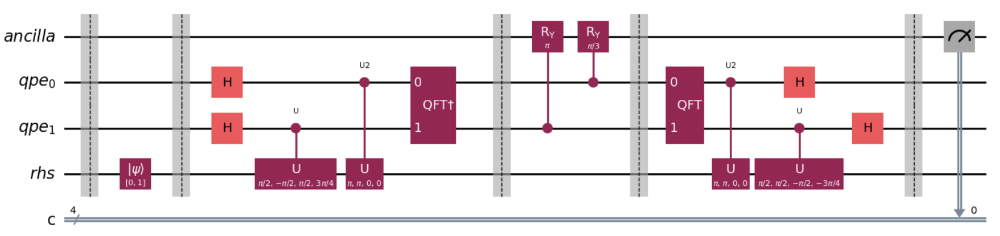

Research Experience
MPI-based Parallelization of Molecular Dynamics Solver
Hand-coded a classical MD solver in C++ using Velocity-Verlet, designed a robust domain decomposition strategy, and optimized short-range force calculation with Cell Lists and 26-Neighbor communication.

Quantum-Classical Hybrid Computing for Linear Systems
Implemented HHL and VQLS algorithms using the XACC framework to integrate multiple quantum backends; benchmarked performance vs classical solvers at the compiler level.
Object-Oriented Nonlinear FEM Solver in Java
Developed an extensible FEM solver capable of nonlinear analysis with Newton–Raphson and arc-length methods, emphasizing modular architecture and polymorphism.